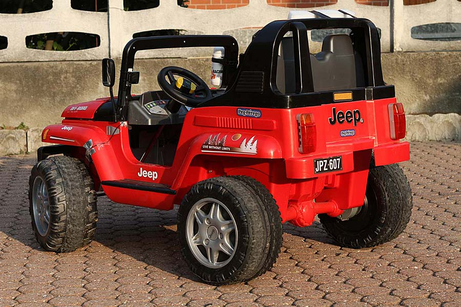
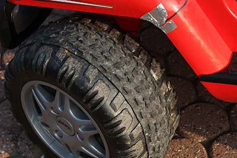
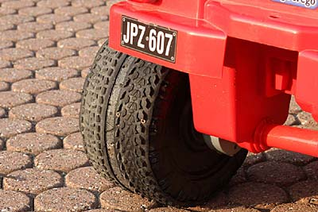
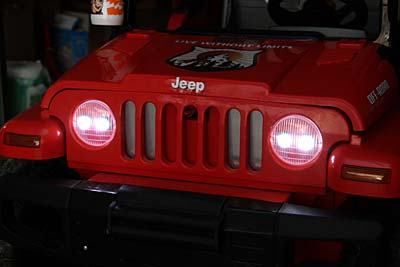
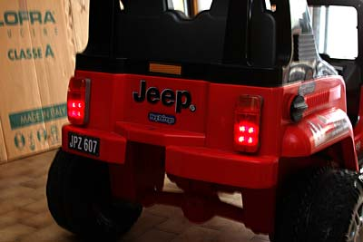
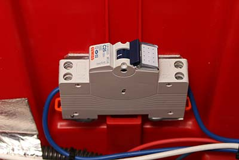
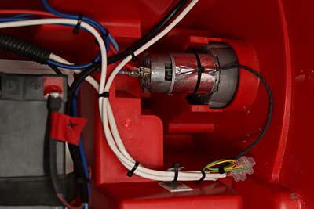

Photo & projects
How to pimp your Perego Jeep
"DIY" by R.Chirio
Page index

Jeep Perego modified
March 2012
At the strong insistence of my 6-year-old son....I modified the original toy car to achieve better performance.
- Two 12V 10Ah batteries have been added and installed behind, under the seat to run the motors at 24V via PWM control.
- The black plastic tires were covered with MTB tires to reduce noise, improve grip and reduce the fast wear of the original plastic, especially for the rear drive wheels.
- Installed LED headlights to be able to drive at night too.
- Added bicycle speedometer, connected to the front wheel via magnetic sensor.
- Power meter installed to display voltage, current and power drawn from the battery, also with the Wh function, it is possible to check the runtime by reading the Wh consumed.
- Electronic system for motor speed control, managed by Arduino, speed adjustment knob on the control panel.
- Turbo function, to give maximum power to the motors for 8 seconds.
- The original motors have been maintained, self-ventilating, to avoid melting them a motor temperature and current control has been added.
The pedal accelerator system was not modified, as it has the function of brake on release, therefore modifications would have become more challenging. Speed regulation is obtained only with the knob on the panel.
Performance obtained:
- runtime of 12-15km on flat ground. Consumption of about 85-95Wh
- speed of 12kmh 1st gear with motors in series, as well as in reverse.
- speed of 22kmh 2nd gear, with motors in parallel and PWM at 100% temperature control, for temp.> of 50° switches to PWM50%
- power consumed under load going up over 250W, maximum current drawn 21A@24V
Description of modifications
{kind=link}
- The flying group dashboard.
- On the left the odometer, connected to the front wheel, is a bicycle odometer set for a circumference of 1000mm that corresponds exactly to the circumference of the original Perego wheel.
- Light control switches, with battery and engine temperature indication LEDs.
- Speed control by knob, since it's not so easy to make an accelerator on the Jeep system, it was preferred to leave the switch pedal and put the control on a knob.
- We see the power meter that gives us the instantaneous consumption as well as Wh consumed.
- On the right finally the engine temperature thermometer.
Tires
- The original wheels are hard plastic and wear easily as well as having a strong rolling noise especially on unpaved ground.
- They have been covered with MTB tires. Ideally large ones like 2.10 or larger. The central part of the tread is maintained by trimming the edges.
- The tire is glued to the plastic wheel using Bostick glue and some countersunk Parker screws to hold it in position; once the glue has hardened, the screws can also be removed.

- The rear wheels most subject to wear are covered with two turns of tire.
- With just 1 MTB bike tire 26" you can make the entire tread, the size is just right.
- For the rear it was preferred to use cyanoacrylate glue, more resistant to stress.
- With the adoption of rubber covers, the advance noise is also greatly reduced.
- Much improved grip, especially on grass and dirt, better if the bike tires are new...

Lighting
- The Jeep has no standard lighting, so 4 P4 LEDs were added inside the original transparent headlights.
- Two LEDs have lenses from 10° for high beam function and two LEDs with lenses from 25° to give wide beam.
- The lighting gets power from the original 12V 8Ah battery of the little car. An SW2800 regulator stabilizes the LED current.
- The light emitted equal to about 1000Lumen is excellent for driving at night (obviously on a private courtyard). With charged battery the runtime is about 5 hours of light.

- For the rear lights 4 red 5mm 20mA LEDs were used always connected to the 12V auxiliary battery
- Strong and very visible light. It is possible to flash the LEDs to increase visibility.

Batteries
- Engine bay, where 2 Pb batteries of 12V 10Ah were housed. It is a bay, already prepared in the plastic body.
- Under the batteries it is good to put a rigid support surface and then fix the batteries with a sturdy rubber band obtained from an inner tube.
- In series with the batteries there must be a 20A fuse.
- On the right the connector for the battery charger.
{kind=link}
- Used as main switch a 15A circuit breaker.
- Wiring with 4mmq cables

Motors
- The original motors are self-ventilating 540 motors. After some tests they proved robust and reliable. Important not to let them heat above 50° otherwise they melt....
- You can see the temperature probe fixed with aluminum tape and held in place with a clamp. silicone fixing is also fine, important not to obstruct the ventilation slot.

PWM motor control
Electrical circuit diagram
© Roberto Chirio: all rights reserved.